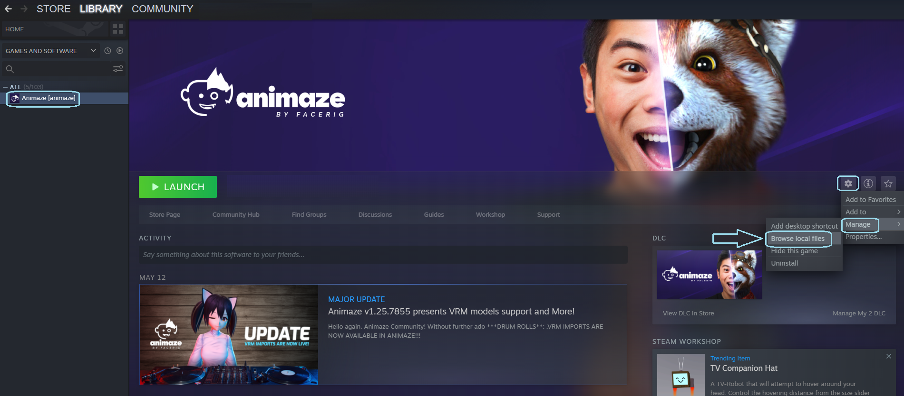
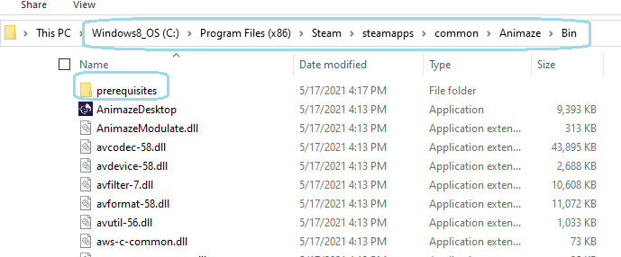
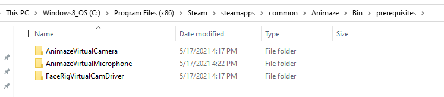

Animaze Desktop: How can I install redistributables?
1. Go to Steam Library
2. Right Click on Animaze and go to "Local Game Files"

3. Go in the "Bin" Folder, here you will find a folder called "prerequisites" open it

4. You will another 3 folders Animaze Virtual Webcam (which installs automatically after opening the app for the first time) Animaze Virtual Microphone (which you will need if you want to broadcast using Animaze Voice Effects) Facerig Virtual Webcam (backup safety, if there are any errors with broadcasting via Animaze Virtual Webcam)

5. Animaze Virtual Webcam and Animaze Virtual Microphone have install.bat files for easy access/install.
6. Facerig Virtual Webcam comes with installers for different versions of Windows (Win7, Win8, Win10)